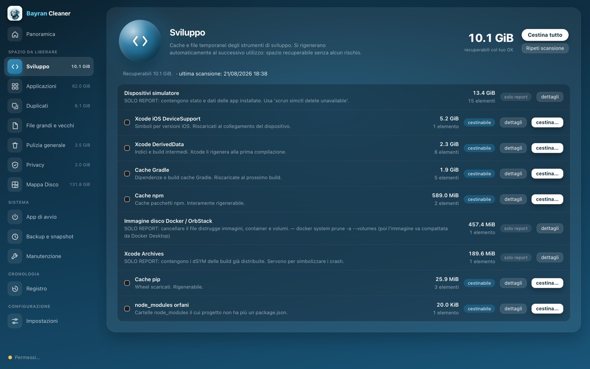
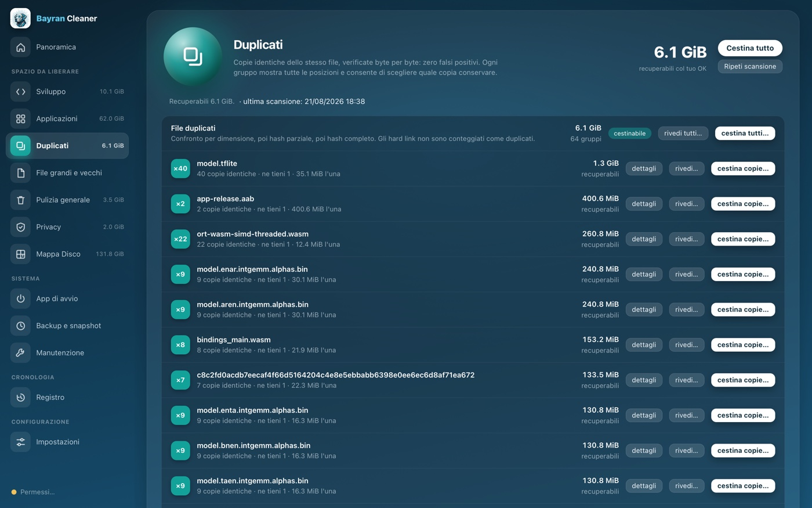
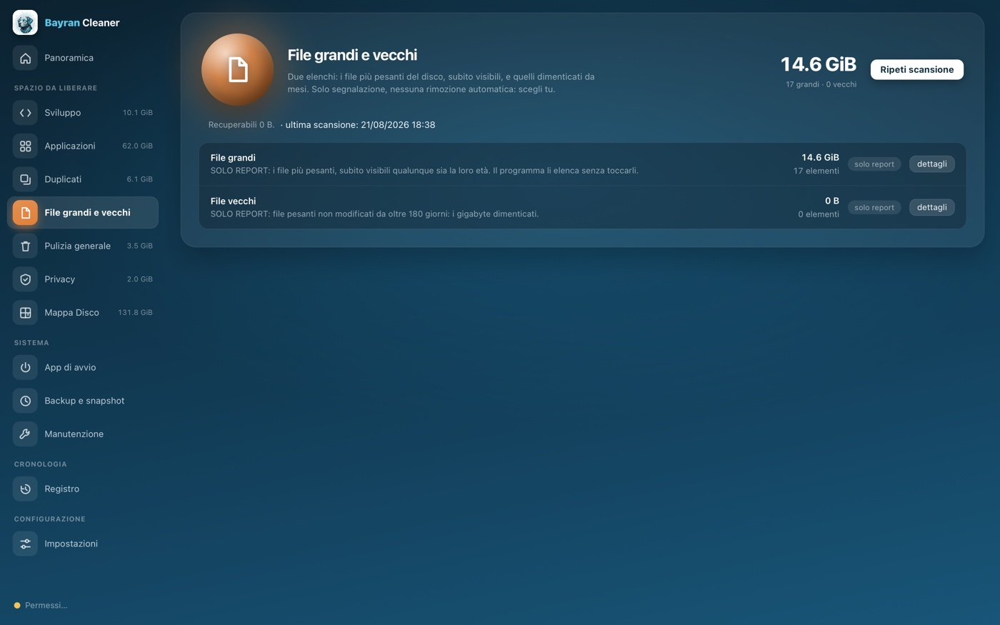
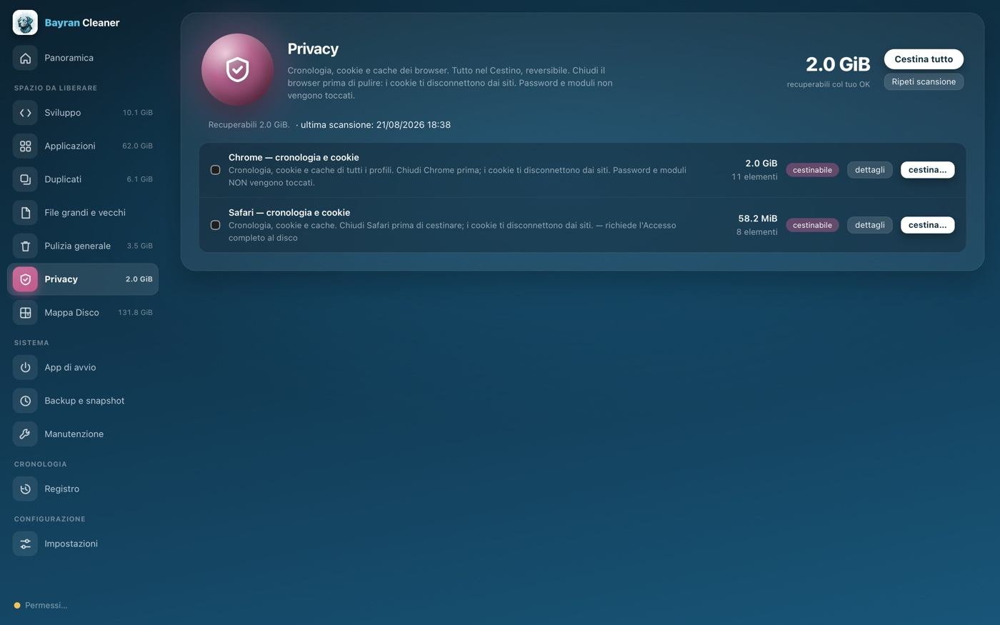
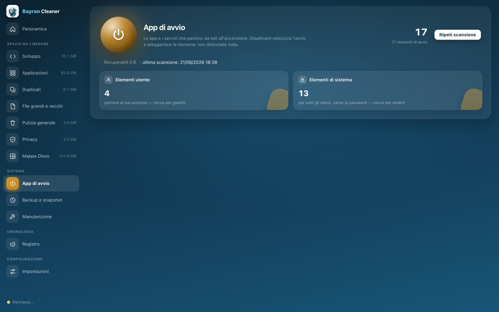

Bayran Cleaner
Libera spazio sul tuo Mac, senza trucchi.
Tutto nel Cestino, sempre reversibile — e i numeri che vedi sono quelli veri.
Versione 3.2.0 · Gratuito
Libera spazio sul tuo Mac, senza trucchi.
Tutto nel Cestino, sempre reversibile — e i numeri che vedi sono quelli veri.

Otto strumenti mirati, una promessa sola: ti mostriamo cosa occupa spazio e decidi tu, voce per voce.
Cache delle app, log, allegati di Mail, installer dimenticati, vecchi aggiornamenti di iPhone: ogni voce spiega cosa fa e quanto pesa.

Disinstallazione completa, dati nascosti inclusi, e residui delle app già eliminate. E quando c'è un aggiornamento, lo scarica dal canale ufficiale del produttore, verifica la firma e installa. Un clic.

Cache dei compilatori, build intermedie, simulatori, node_modules orfani: i gigabyte invisibili di chi sviluppa, spiegati e recuperabili senza rischi.

Confronto byte per byte: zero falsi positivi. Scegli tu quale copia tenere, gruppo per gruppo.

I file più pesanti del disco e quelli dimenticati da mesi, subito visibili. Solo segnalazione: nessuna rimozione automatica.

Cronologia, cookie e cache di Safari, Chrome e Firefox. Password e moduli non vengono mai toccati.

Le cartelle ordinate per peso, esplorabili al clic, con misura progressiva istantanea.

Le app e i servizi che partono da soli all'accensione: disattivarli velocizza l'avvio e alleggerisce la memoria, senza disinstallare nulla.

Un programma di pulizia lavora sui tuoi file. Per questo Bayran Cleaner segue regole fisse, senza eccezioni.
Gratuito, firmato e verificato da Apple. Si aggiorna da solo.
Scarica gratis